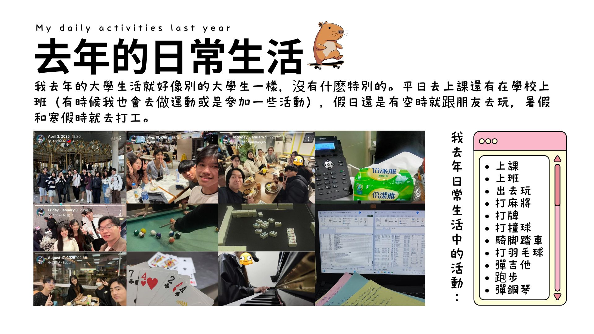

我去年的大學生活跟其他的大學生一樣，沒有什麽特別的。平日我會去上課，也會在學校打工（有時候還會去運動或是參加一些活動），假日或有空的時候，我會跟朋友出去玩，到了暑假和寒假，我會去工廠打工。
我去年日常生活中的活動：（上課，上班，出去玩，打麻將，打牌，打撞球，騎脚踏車，打羽毛球，彈吉他，跑步，彈鋼琴）
My college life last year was just like other college students, nothing special. On weekdays, I would go to classes and also work part-time at school (sometimes I would also go exercise or join some activities). On weekends or when I had free time, I would go out with friends. During summer and winter breaks, I worked at a factory.
My daily activities last year: (Attending class, going to work, going out/hang out, playing mahjong, playing cards, playing pool, riding a bicycle, playing badminton, playing guitar, running, playing piano.)
| Chinese (中文) | English (英文) |
|---|---|
| 我去年的大學生活跟其他的大學生一樣 | My college life last year was just like other college students |
| 沒有什麽特別的 | nothing really special |
| 平日我會去上課，也會在學校打工 | On weekdays, I would go to classes and also work part-time at school ( |
| （有時候還會去運動或是參加一些活動） | (sometimes I’d also exercise or join some activities) |
| 假日或有空的時候 | On weekends or when I had free time |
| 我會跟朋友出去玩 | I would go out with friends |
| 到了暑假和寒假 | During summer and winter breaks |
| 我會去工廠打工 | I worked at a factory |
| 我去年日常生活中的活動 | My daily activities last year |
| 上課，上班，出去玩，打麻將 | Attending class, going to work, going out for fun, playing mahjong |
| 打牌，打撞球，騎脚踏車，打羽毛球 | Playing cards, playing pool, riding a bicycle, playing badminton |
| 彈吉他，跑步，彈鋼琴 | Playing guitar, running, playing piano |
Vocabulary List(生詞表)
| Chinese Character (漢字) | Pinyin (拼音) | English (英文) |
|---|---|---|
| 去年 | qùnián | Last year |
| 日常 | rìcháng | Daily |
| 生活 | shēnghuó | Life |
| 跟 | gēn | With / and |
| 其他 | qítā | Other |
| 大學生 | dà xuéshēng | University student |
| 一樣 | yīyàng | The same / alike |
| 沒有 | méiyǒu | Nothing |
| 特別 | tèbié | Special |
| 平日 | píngrì | Weekdays |
| 上課 | shàngkè | Attend class / go to class |
| 在學校 | zài xuéxiào | At school |
| 打工 | dǎgōng | Part-time job / Work part-time |
| 有時候 | yǒu shíhou | Sometimes |
| 運動 | yùndòng | Exercise/sports |
| 或是 | huòshì | Or |
| 參加 | cānjiā | Participate |
| 一些 | yīxiē | some |
| 活動 | huódòng | activities |
| 假日 | jiàrì | Holidays / Weekends |
| 有空 | yǒu kòng | Having free time |
| 時候 | shíhòu | Time / when (a certain time) |
| 跟朋友 | gēn péngyǒu | With friends |
| 出去玩 | chū qù wán | Go out/hang out |
| 暑假 | shǔjià | Summer Vacation |
| 寒假 | hánjià | Winter Vacation |
| 工廠 | gōngchǎng | Factory |
| 打麻將 | dǎ májiàng | Playing mahjong |
| 打牌 | dǎpái | Playing cards |
| 打撞球 | dǎ zhuàngqiú | Playing billiards |
| 騎腳踏車 | qí jiǎotàchē | Ride a bicycle |
| 打羽毛球 | dǎ yǔmáoqiú | Playing Badminton |
| 彈吉他 | tán jítā | Playing guitar |
| 跑步 | pǎobù | Running / jogging |
| 彈鋼琴 | tán gāngqín | Playing piano |